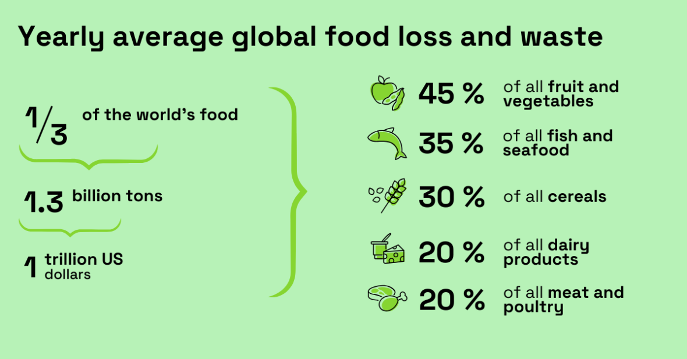

Tips to Reduce Waste
- Plan your meals before shopping.
- Store food properly to extend its shelf life.
- Use leftovers creatively.
- Compost organic waste.

Food wastage is a significant issue affecting our environment and economy. Understanding its impact is crucial for making informed choices.

Join us in our initiative to reduce food wastage! As a member, you will receive updates and tips on how to further contribute to this cause.